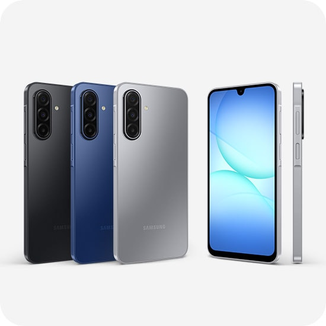

Samsung Galaxy A17 5G: um celular pensado para durar muitos anos.
📅 Publicado em 19/07/2026
O Samsung Galaxy A17 5G foi desenvolvido para quem procura um smartphone confiável para o dia a dia, mas sem abrir mão de recursos encontrados em modelos mais caros. O aparelho reúne tela Super AMOLED de 6,7 polegadas com taxa de atualização de 90 Hz, conectividade 5G, câmera principal de 50 MP com estabilização óptica de imagem (OIS) e bateria de 5.000 mAh. Um dos seus maiores diferenciais está no suporte de software. A Samsung promete até seis gerações de atualizações do Android e atualizações de segurança até 2031, tornando o Galaxy A17 5G uma opção interessante para quem pretende permanecer vários anos com o mesmo smartphone.
Design e Construção
O Galaxy A17 5G mantém o visual moderno da linha Galaxy A, com acabamento discreto e apenas 7,5 mm de espessura. O aparelho pesa 192 g, oferecendo uma boa ergonomia para um smartphone com tela grande. A Samsung também adicionou certificação IP54, que oferece resistência contra poeira e respingos de água, aumentando a proteção no uso cotidiano. Apesar da construção em plástico, o acabamento transmite boa sensação de qualidade e segue o padrão encontrado em outros modelos da categoria.
Tela
A tela é um dos principais destaques do Galaxy A17 5G. O aparelho utiliza um painel Super AMOLED Full HD+ de 6,7 polegadas, com resolução de 1080 × 2340 pixels e taxa de atualização de 90 Hz. Na prática, isso significa cores vivas, excelente contraste, pretos profundos e uma navegação mais fluida em aplicativos e redes sociais. Para assistir filmes, séries ou vídeos no YouTube, a qualidade da tela está entre os pontos fortes do aparelho. Embora alguns concorrentes já ofereçam 120 Hz, os 90 Hz entregam uma experiência bastante agradável para a maioria dos usuários.
Desempenho
O Galaxy A17 5G utiliza um processador Exynos 1330, desenvolvido para oferecer bom desempenho nas atividades do dia a dia. Aplicativos como WhatsApp, Instagram, TikTok, YouTube, Spotify, aplicativos bancários e serviços de streaming funcionam com boa fluidez. O aparelho também executa jogos populares, mas títulos mais pesados podem exigir redução na qualidade gráfica para manter um desempenho mais estável. A conectividade 5G garante maior velocidade para downloads, chamadas em vídeo e consumo de conteúdo online nas regiões onde essa tecnologia está disponível.
Câmeras
O conjunto traseiro é composto por três câmeras: principal de 50 MP, ultra-wide de 5 MP e macro de 2 MP. O maior diferencial é a presença da estabilização óptica de imagem (OIS) na câmera principal, recurso que ajuda a reduzir tremores durante fotos e gravações de vídeo. Em ambientes bem iluminados, o Galaxy A17 5G registra imagens com boa definição, cores equilibradas e nível satisfatório de detalhes. Em locais com pouca luz, a estabilização e o processamento de imagem ajudam a melhorar os resultados. A câmera frontal de 13 MP atende bem selfies, chamadas de vídeo e criação de conteúdo para redes sociais.
Bateria
A bateria de 5.000 mAh oferece autonomia suficiente para um dia inteiro de uso na maioria dos cenários. A duração varia conforme o brilho da tela, qualidade da conexão, uso de jogos, gravações de vídeo e outros fatores. O Galaxy A17 5G também é compatível com carregamento rápido de até 25 W. Para atingir essa velocidade, é necessário utilizar um carregador compatível.
Especificações
- Tela Super AMOLED Full HD+ de 6,7 polegadas.
- Resolução de 1080 × 2340 pixels.
- Taxa de atualização de 90 Hz.
- 128 GB de armazenamento interno.
- Câmera principal de 50 MP com estabilização óptica (OIS).
- Câmera ultra-wide de 5 MP.
- Câmera macro de 2 MP.
- Processador Samsung Exynos 1330.
- Expansão por cartão microSD de até 2 TB.
- Certificação IP54.
- NFC.
- Conectividade 5G.
- Carregamento rápido de até 25 W.
- Bateria de 5.000 mAh.
- Câmera frontal de 13 MP.
- Versões com 4 GB, 6 GB e 8 GB de memória RAM.
Pontos positivos
- ✅ Excelente tela Super AMOLED.
- ✅ Conectividade 5G.
- ✅ Câmera principal com estabilização óptica (OIS).
- ✅ Boa autonomia de bateria.
- ✅ NFC para pagamentos por aproximação.
- ✅ Certificação IP54.
- ✅ Expansão por cartão microSD.
- ✅ Longo período de atualizações garantido pela Samsung.
Pontos negativos
- ❌ Não é um smartphone voltado para jogos exigentes.
- ❌ A versão de 4 GB de RAM pode limitar a multitarefa mais pesada.
- ❌ As câmeras ultra-wide e macro entregam qualidade inferior à câmera principal.
- ❌ Alto-falante mono.
Conclusão
O Galaxy A17 5G é um smartphone que aposta no equilíbrio. Em vez de focar apenas em desempenho, a Samsung reuniu recursos que fazem diferença no uso diário, como uma boa tela, conectividade 5G, câmera principal com estabilização óptica, NFC e um dos períodos de atualização mais longos da categoria. Para quem procura um celular para redes sociais, estudos, trabalho, vídeos e uso cotidiano, o conjunto atende muito bem. Já usuários que priorizam jogos pesados ou multitarefa intensa podem se beneficiar mais das versões com maior quantidade de memória RAM ou de modelos superiores da linha Galaxy. Considerando o conjunto de recursos e o compromisso da Samsung com as atualizações, o Galaxy A17 5G se destaca como uma opção sólida para quem deseja um smartphone preparado para acompanhar vários anos de uso.
Onde comprar
Transparência
Esta análise foi elaborada com base em informações oficiais, especificações técnicas e materiais disponibilizados publicamente. O Análise Certa busca fornecer informações claras e confiáveis para ajudar na decisão de compra.